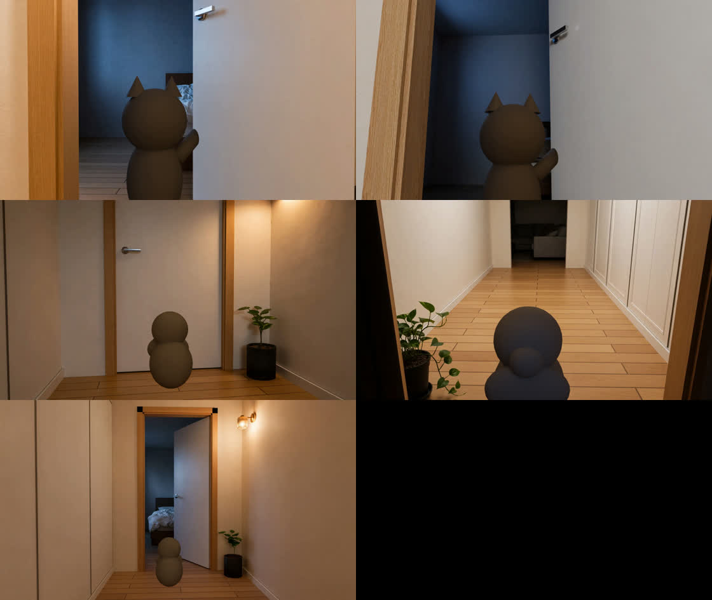
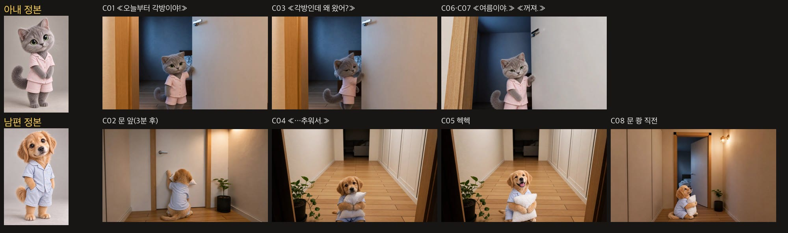

각방인데 왜 왔어? — v6
보리랑 나비 · 미공개 시험작
v5 · 이전판
v6 · 이번판
대표님 지적 → 고친 것
| 지적 | 원인 | v6 |
|---|---|---|
| 첫 장면이랑 뒤 장면 고양이가 다름 | 키프레임마다 그림 AI가 고양이를 새로 그렸고, 정본과 비교하지 않았다 | 정본과 나란히 놓고 맞는 것만 통과 · H3에도 정본을 두 번째 참조로 넣음 · 공식 «유지 목록»(눈·털·잠옷) |
| 문손잡이가 있다 없다 함 | 고양이를 크게 하려고 조립 때 확대 → 위쪽 손잡이가 잘림 | 확대 안 함 · 블렌더 카메라를 처음부터 가까이 |
| «각방인데 왜 왔어» 대사 없음 | 대본에 제목으로만 있고 대사 줄이 없었다 | C03 아내 대사로 추가(아내 목소리) |
| «여름이야» 고양이가 문과 벽 사이 | 그림 AI가 설 수 없는 자리에 넣었다 | 블렌더 «자리 마네킹»으로 위치·크기 고정 → 마네킹만 캐릭터로 바꿈 |
자리 마네킹 (블렌더)

점검표 — 정본과 키프레임
